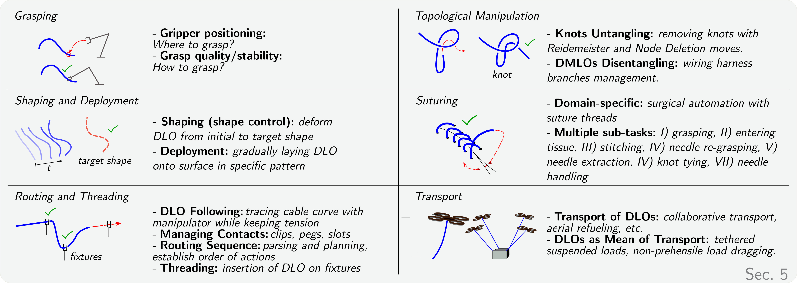
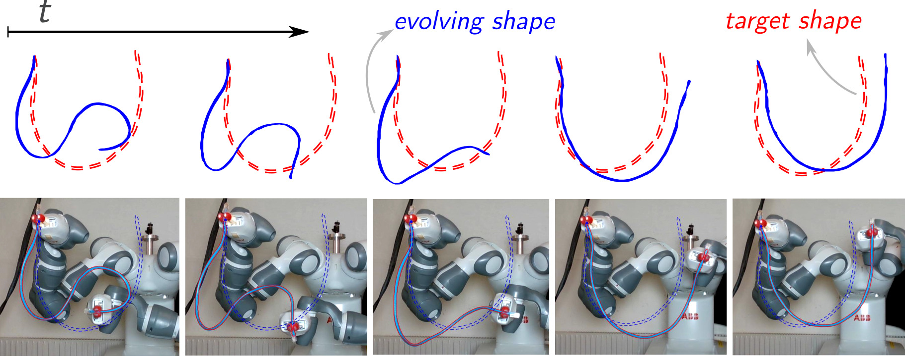
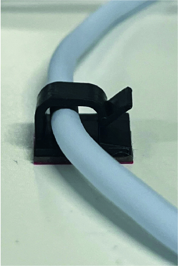
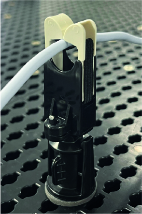
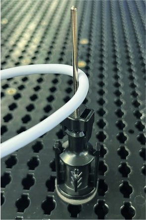
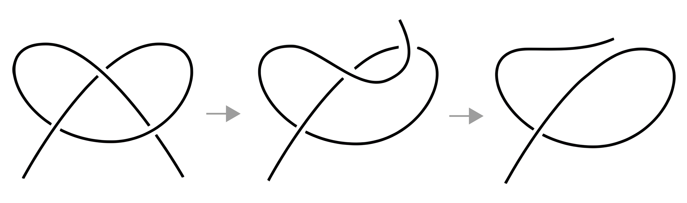
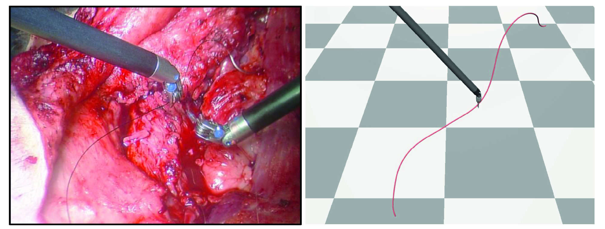
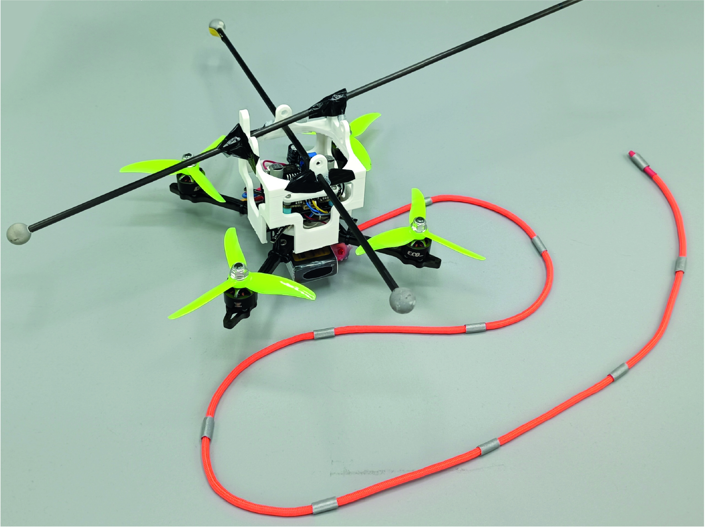
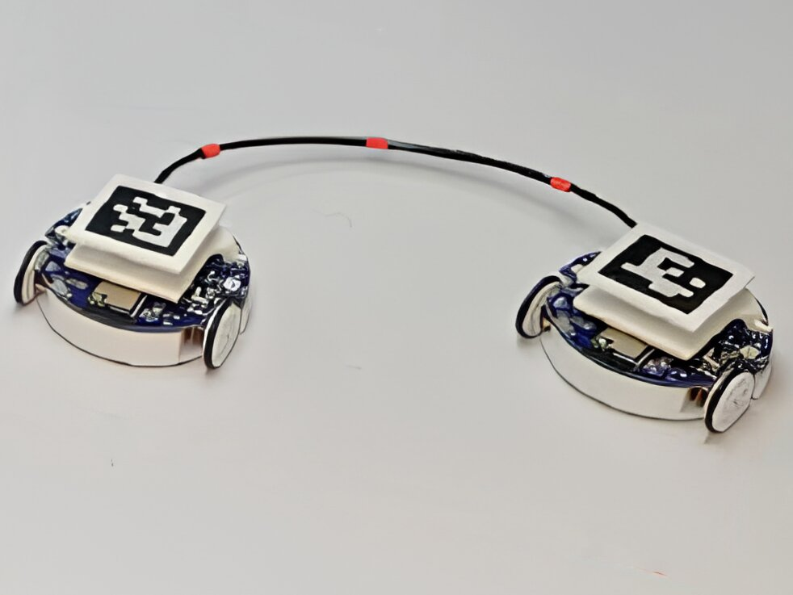

5 Manipulation Tasks

5.1 Grasping
In the context of DLO manipulation, grasping refers to the process of establishing a controlled contact between a manipulator and the deformable object to constrain its motion and enable purposeful interaction. Unlike rigid object grasping, DLO grasping must account for compliance, shape variability, and the potential for deformation during contact, often requiring strategies that ensure stability without inducing unwanted strain or slippage. Although grasping is a fundamental component across diverse DLO manipulation tasks, it remains considerably underexplored, as most works assume predefined grasp points and stable contact conditions.
The problem of grasping can be decomposed into two related but distinct challenges: where to grasp, usually addressed as gripper positioning (Cuiral-Zueco et al., 2022); and how to grasp, thus concerning grasp quality and stability (Roa and Suárez, 2015).
Gripper positioning for deformable objects focuses on identifying optimal grasp placements that facilitate related tasks such as shape control (Sec. 5.2) or topological manipulation (Sec. 5.4). For these tasks, parallel yaw grippers are widely used for both shaping (Yu et al., 2022), disentangling (Lui and Saxena, 2013; Caporali et al., 2025), or bin picking in cluttered environments (Zhang et al., 2022; Zhang et al., 2024; Zhang et al., 2024; Dirr et al., 2024).
Conversely, the grasp strategy, i.e. how to grasp, is particularly critical in tasks such as routing (specifically DLO following, see Sec. 5.3), where grasp stability is more easily compromised during task execution. Despite parallel-jaw grippers still being widely deployed (She et al., 2021), dexterous hands are gaining traction due to the increased versatility (Yu et al., 2024).
Moreover, several transport-related tasks (Sec. 5.6) have explored alternatives to direct grasping. In particular, non-prehensile transport methods (see Sec. 5.6.2) leverage the compliant properties of DLOs to manipulate external objects through indirect interactions—such as dragging, wrapping, or tethering—without the need for rigid attachment (Zhi et al., 2024). These approaches are especially advantageous in environments where grasping is difficult, costly, or infeasible. A discussion on the role and potential of non-prehensile DLO manipulation is presented in Sec. 6.2.
Table 4. Summary of the surveyed literature on DLOs shaping. State estimation combined with online Jacobian modeling via Least Squares (LS) emerges as the predominant approach. Learning-based methods are most commonly integrated within short-horizon MPC frameworks. Elastoplastic behavior and contact-rich manipulation remain largely underexplored.
| References | Perception Input | DLO Behavior | Env | Robot Setup | Action Type | Exploited DLO Model | Control Method | Type Exp |
|---|---|---|---|---|---|---|---|---|
| (Nair et al., 2017) | image (RGB) | plastic | 2D | single + fix | pick position + displacement | -- | learned policy (self-supervised BC) | real |
| (Zhu et al., 2018) | state | elastic | 2D | dual | velocities | jacobian (online) | servoing | real |
| (Jin et al., 2019) | state | elastic | 2D | dual | velocities | jacobian (robust LS, online) | servoing | real |
| (Wang et al., 2019) | image (grayscale) | plastic | 2D | single | pick position + displacement | -- | learned policy (self-supervised BC) | sim, real |
| (Lagneau et al., 2020) | state | elastic | 3D | dual | velocities | jacobian (weighted LS, online) | servoing | real |
| (Sundaresan et al., 2020) | depth descriptor | plastic | 2D | single | pick-and-place | -- | greedy heuristic geometric policy | real |
| (Yan et al., 2020) | state | plastic | 2D | single | pick-and-place | learned bi-LSTM | MPC (sampling-based) | sim, real |
| (Laezza and Karayiannidis, 2021) | state | elastoplastic | 3D | dual | velocity + hinge/lock constraint | -- | learned policy (RL) | sim |
| (Lee et al., 2021) | image (binary) | plastic | 2D | single | pick-and-place (image-space) | learned image-space predictive model | cost function minimization | sim, real |
| (Khalifa and Palli, 2022) | state | plastic | 2D | single | pick-and-place | dynamic splines | cost function minimization | sim |
| (Seita et al., 2021) | image (RGB) | plastic | 2D | single | pick-and-place | -- | learned policy (supervised BC) | sim |
| (Yang et al., 2021) | state | elastic | 3D | single + fix | displacements | learned bi-LSTM + Interaction Network | MPC (gradient-based) | sim, real |
| (Zanella and Palli, 2021) | state | plastic | 2D | single | pick-and-place | -- | learned policy (RL) | real |
| (Zhang et al., 2021) | image (binary) | plastic | 2D | single | pick position + displacement | learned model | MPC (sampling-based) | real |
| (Jihong Zhu et al., 2021) | state | elastic | 2D | single + fix | displacements | jacobian (online receding horizon) | servoing | sim, real |
| (Aghajanzadeh et al., 2022) | state | elastic | 2D | single + fix | velocities | jacobian (ARAP, online) | optimal control law | sim, real |
| (Aghajanzadeh et al., 2022) | keypoints | elastic | 2D | single + fix | velocities | jacobian (ASAP, offline) | servoing | sim, real |
| (Aghajanzadeh et al., 2022) | keypoints | elastic | 2D | single + fix | velocities | -- | adaptive servoing | sim, real |
| (Huo et al., 2022) | state | plastic | 2D | dual + contacts | pick-and-place | -- | heuristic motion primitives | real |
| (Lv et al., 2022) | state | elastic | 3D | single/dual | velocities | discrete elastic rod | optimization-based controller (deployment task) | sim, real |
| (Ma et al., 2022) | keypoints | plastic | 2D | single | pick-and-place | learned GNN+RNN | MPC (sampling-based with learned reward) | sim, real |
| (Yu et al., 2022) | state | elastic | 3D | dual | velocities | learned GNN (online adaptation) | optimization-based adaptive controller | sim, real |
| (Zakaria et al., 2022) | state | elastic | 3D | single + fix | linear velocities | -- | learned policy (RL) | sim |
| (Wang et al., 2022) | state | elastic | 2D | dual | linear velocities | learned GNN (online adaptation) | MPC (gradient-based) | sim, real |
| (Daniel et al., 2024) | state | elastic | 3D | single + fix | velocities | -- | learned policy (RL) | sim, real |
| (Huang et al., 2023) | state | elastic | 2D | dual + contacts | pick-and-place | learned GNN | MPC (gradient-based) | sim, real |
| (Qi et al., 2023) | state | elastic | 2D | single + fix | velocities | jacobian (UKF, online) | servoing (with gradient-based gains optimization) | real |
| (Shetab-Bushehri et al., 2023) | state | elastic | 3D | dual | velocities | jacobian (analytical ARAP, online) | servoing | real |
| (Tong et al., 2024) | state | elastic | 3D | single | positions | learned MLP | optimization-based controller (deployment task) | real |
| (Artinian et al., 2024) | state | elastic | 3D | dual | velocities | jacobian (analytical Cosserat, online) | servoing | real |
| (Caporali et al., 2024) | state | plastic | 2D | singe | pick-and-place | learned MLP | cost function minimization (gradient-based) | real |
| (Szymko et al., 2024) | state | elastic | 3D | dual | 3D velocities | jacobian (recursive LS, online) | servoing | real |
| (Tang et al., 2024) | state | elastic | 3D | dual + constraints | velocities | learned MLP + jacobian (online) | MPC (gradient-based with post-process safety filter) | sim, real |
| (Zhou et al., 2024) | state | elastic | 3D | single + human | linear velocities | jacobian (latent derivation, online) | servoing (with sliding mode control) | real |
| (Zhang et al., 2024) | pointcloud | plastic | 2D | single | pusher positions | learned GNN | MPC (sampling-based) | sim, real |
| (Gu et al., 2025) | state | elastic | 2D | single + fix | velocities | learned GNN | MPC (gradient-based) | sim, real |
5.2 Shaping & Deployment
Shaping involves manipulating a DLO from an initial configuration to a desired target shape using one or more robotic manipulators (Cuiral-Zueco and López-Nicolás, 2024), as illustrated in Fig. 10. A closely related task is DLO deployment, which concerns the objective of gradually laying the DLO onto a surface following a specified shape or pattern (Lv et al., 2022; Tong et al., 2024).
Shaping and deployment tasks, following (Cuiral-Zueco and López-Nicolás, 2024), can be expressed in the standard form: \[ \min_{{u}(\cdot)} E(\mathcal{S}(t,u(t)), \Pi(\mathcal{S}_\mathrm{d})), \] where \(\mathcal{S}(t,u(t))\) represents the object's shape under actions \(u(t)\), \(\mathcal{S}_\mathrm{d}\) is the desired target shape, map \(\Pi(\mathcal{S}_\mathrm{d})=\mathcal{S}\) defines domain correspondences between \(\mathcal{S}\) and \(\mathcal{S}_\mathrm{d}\) (e.g., feature matching), and \(E(\cdot,\cdot)\) is a shape error metric (e.g., Procrustes distance, \(L_2\) curvature norm, etc.). Problem (3) is considered solved when \(E\bigl(\mathcal{S}(t,u(t)),\,\Pi(\mathcal{S}_\mathrm{d})\bigr)=0 \) (in the asymptotic sense, \(\lim_{t\to\infty}E(\cdot,\cdot)=0\)), or when \(E\) reaches the minimum value that is feasible given the object's physical constraints and system actuation capabilities. Most existing works assume the evolution of \(\mathcal{S}(t,u(t))\) to be quasistatic, i.e., \(\mathcal{S}(t,u(t))=\mathcal{S}(u(t))\) (see Sec. 2.2.2); accordingly, Sec. 5.2.1 focuses on quasistatic shape control and deployment methods. In contrast, some works consider highly dynamic (non-quasistatic) DLO systems, where the DLO's shape, or specific parts such as a rope's tip, are manipulated to achieve casting, thereby addressing high-speed shape control. Due to the distinct nature of these casting-based approaches compared to conventional quasistatic shape control, a dedicated casting section is provided in Sec. 5.2.2.

5.2.1 Quasistatic Shaping & Deployment.
Table 4 provides a comprehensive overview of the main literature addressing DLO shaping tasks. Among the various aspects considered, a key distinction is made based on the behavior of the DLO, i.e. how its shape changes in response to manipulation by the robotic arm. The DLO behavior can be broadly classified as follows[1]:
- Elastic: The DLO deforms under force but returns to its original shape when the force is removed (Yu et al., 2022) (e.g., stiff wires, plastic tubes).
- Plastic: The DLO retains permanent deformation after manipulation (Yan et al., 2020) (e.g., soft wires or ropes with low stiffness when manipulated on frictional surfaces).
- Elastoplastic: The DLO behaves elastically up to a yield point, after which it deforms plastically (Laezza and Karayiannidis, 2021). This hybrid behavior increases modeling complexity (e.g., electrical cables).
The analysis of Table 4 reveals several recurring patterns in the literature. While earlier works often relied on image-based inputs, recent approaches increasingly provide the DLO state directly, either by adopting simplifying assumptions about perception or by leveraging learning-based methods, as discussed in Sec. 3. Most studies focus on elastic DLOs, whereas DLOs exhibiting plastic responses were more prevalent in earlier methods. Notably, DLOs with elastoplastic behavior have been investigated only in (Laezza and Karayiannidis, 2021). An interesting object type is manipulated in (Qi et al., 2021), where shape servoing of composite rigid-deformable objects—including uniform and joint-like connected DLOs—is performed through contour moments analysis. The majority of shaping tasks are carried out in 2D environments, although a growing number of recent works address the complexities of 3D manipulation. The exploitation of contact-rich interactions or environmental constraints remains relatively rare, with only a few works explicitly incorporating them into the shaping process (Huo et al., 2022; Huang et al., 2023; Tang et al., 2024). Human-in-the-loop shaping has been analyzed only in (Zhou et al., 2024).
Action types generally fall into two main categories: velocity-based actions, typically used in servoing controllers, and pick-and-place strategies, which are often paired with learning-based models or policy-driven controllers. The Exploited DLO Model column in Table 4 refers to the specific representation of the DLO that informs the control policy, i.e. capturing how the DLO is expected to respond to a given action. These models may include analytical physics-based formulations, learned approximations aimed at accelerating prediction and control such as Multi-Layer Perceptrons (MLPs), Graph Neural Networks (GNNs), and Recurrent Neural Networks (RNNs), estimated deformation Jacobians (see Sec. 4.1.2), or hybrid combinations. The choice of the exploited DLO model is closely tied to the applied control strategy, which predominantly includes servoing, sampling- or gradient-based MPC, or learned policies. Importantly, in the case of learned policies, e.g. those trained via Reinforcement Learning (RL) or Behavior Cloning (BC), actions are predicted directly from input observations without relying on an explicit model of DLO behavior. As such, these entries are left empty in the Exploited DLO Model column, as no internal representation is used during control. The same applies to approaches using heuristic or rule-based motion primitives that do not explicitly incorporate any predictive model of the DLO response. This terminology aligns with the standard convention in the field, where a manipulation method is considered model-based only if it explicitly learns or utilizes a model (defined as in Sec. 2) to determine the manipulation actions.
Earlier works often favored RL and BC techniques, while the use of learned approximations of analytical models (such as neural networks trained to mimic physical dynamics) is becoming increasingly popular in recent approaches. While early studies primarily focused on simulation-only evaluations, a growing number of recent works demonstrate and validate their approaches in both simulation and real-world scenarios.
A strong correlation emerges between plastic material response, 2D environments, single-arm robot setups, pick-and-place actions, and learned models, characteristic of shaping tasks where the DLO is manipulated over a supporting surface. Conversely, the combination of elastic DLOs, dual-arm setups, and velocity-based actions is commonly associated with servoing tasks, which are prevalent in both 2D and 3D environments.
5.2.2 Casting & High-Speed Shaping.
Dynamic manipulation of DLOs involves applying fast[1], time-dependent motions to produce complex behaviors. This contrasts with quasi-static manipulation. These motions are typically executed open loop once generated.
Typical tasks in this domain include whipping (Zimmermann et al., 2021; Lim et al., 2022; Chi et al., 2024), which generally involve free-end DLOs, and vaulting, knocking, and weaving (Zhang et al., 2021), which are performed with fixed-end cables. Whipping (often addressed also as casting) is a dynamic manipulation task where a robot quickly moves one end of a DLO to generate high-speed motion that travels along it, using the object’s elasticity and inertia to control the free end and reach targets beyond the robot’s immediate reach. The latter tasks involve dynamically manipulating a DLO to 1) vault over an obstacle, 2) knock an object off an obstacle, and 3) weave the DLO between multiple obstacles.
In terms of modeling, an algebraic deformation model that assumes negligible gravity effects due to fast motion and models the DLO as a series of joints following the robot with a constant delay is proposed in (Yamakawa et al., 2013). On the other hand, Zimmermann et al., 2021 studies the dynamic manipulation of free-end beams using FEM models combined with optimal control techniques for trajectory optimization.
Given the complexity of dynamic DLO manipulation, learning-based approaches are commonly applied, often relying on low-dimensional, parameterized action spaces to simplify control and training: two sweeping arcs (Lim et al., 2022), apex point (Zhang et al., 2021), and two joint angles (Chi et al., 2024). Maximum velocity is also treated as a learnable parameter, and the task space is often constrained to 2D (Lim et al., 2022; Chi et al., 2024). Resetting the object’s initial state before each action ensures consistency and repeatability (Lim et al., 2022; Zhang et al., 2021)
Across all approaches, simulation plays a critical role, either for bridging the sim-to-real gap (Lim et al., 2022) or for bootstrapping the learning process (Zhang et al., 2021). Iterative refinement strategies enable easy online adaptation to system changes (Chi et al., 2024).
5.2.3 Existing Literature Gaps.
Research on DLO shaping is predominantly confined to well-established setups, such as pick-and-place manipulation of plastic DLOs on planar surfaces or dual-arm manipulation of elastic DLOs. These scenarios often assume simplified environments without obstacles or complex interactions. However, in real-world applications (and in human manipulation), contact-rich interactions and environmental constraints play a crucial role, especially given the underactuated nature of DLO shape control (Huo et al., 2022; Huang et al., 2023).
A second gap lies in the predominant elastoplastic behavior of real-world DLOs, such as electrical cables, which received limited attention in existing research (Laezza and Karayiannidis, 2021).
Many existing approaches assume the desired target shape is reachable and valid without explicitly verifying these conditions, often relying on heuristic checks instead. This highlights a significant gap in the current research, where formal reachability analysis is lacking.
5.3 Routing & Threading
Routing involves systematically arranging DLOs to conform to a target configuration while establishing contact with environment objects. A key aspect of routing strategies is the use of fixtures (e.g., clips or jigs), which anchor the manipulated DLO in place, and contact or pivoting points, which facilitate tension control and enable smooth directional changes of the DLO along the routing path. The key elements involved in the routing process are illustrated in Fig. 11. Threading is a related sub-task frequently encountered in practical applications, such as threading a needle or inserting wires into industrial assemblies. It involves guiding the DLO through a designated hole or eyelet in the environment, typically demanding higher precision despite the intrinsic DLO flexibility.
Unlike the more general shaping task of Sec. 5.2, routing also requires managing the sliding motion of the DLO along the gripper fingers (as discussed in Sec. 5.1), as well as executing precise insertions into fixing points/holes and interacting with pivoting elements along the path.
Table 5. Summary of the main literature on DLO routing and threading. The table highlights a strong reliance on tactile/force sensors for local execution tasks (Following, Contacts) and vision for global Planning. Notably, the field is heavily skewed toward 2D planar setups, leaving full 3D routing and dynamic harnessing relatively underexplored.
| References | External Sensor | DLO Behavior | Env | Robot Setup | Task |
|---|---|---|---|---|---|
| (Huang et al., 2015) | vision | plastic | 2D | custom | Threading |
| (Wang et al., 2015) | -- | elastic | 3D | single | Threading |
| (Hellman et al., 2017) | tactile | plastic | 2D | single + fix | Following |
| (De Gregorio et al., 2018) | vision, tactile | elastic | 3D | single | Threading |
| (Zanella et al., 2019) | tactile | elastic | 3D | single | Threading |
| (Zhu et al., 2019) | vision | plastic | 2D | dual | Contacts |
| (Galassi and Palli, 2021) | tactile | plastic | 2D | single + fix | Following, Contacts, Planning |
| (She et al., 2021) | tactile | plastic | 2D | single + fix | Following |
| (Keipour et al., 2022) | vision | plastic | 2D | single | Planning |
| (Jin et al., 2022) | vision | plastic | 2D | single + fix | Planning |
| (Pecyna et al., 2022) | vision, tactile | plastic | 2D | single + fix | Following |
| (Süberkrüb et al., 2022) | force | plastic | 2D | single, dual | Following, Contacts |
| (Chen et al., 2023) | vision, force | plastic | 2D | dual | Contacts, Planning |
| (Monguzzi et al., 2023) | tactile | elastic | 3D | single + fix | Following, Contacts |
| (Yu et al., 2023) | tactile | elastic | 2D | single | Threading |
| (Wilson et al., 2023) | vision, tactile | plastic | 2D | single + fix | Following, Contacts, Planning |
| (Chen et al., 2024) | force | plastic | 2D | dual | Contacts |
| (Li and Choi, 2024) | vision | elastic | 2D | single | Threading |
| (Luo et al., 2024) | vision | plastic | 2D | single + fix | Contacts, Planning |
| (Monguzzi et al., 2024) | tactile | elastic | 2D | single + fix | Following |
| (Monguzzi et al., 2024) | -- | elastic | 2D | single + fix | Following |
| (Yu et al., 2024) | tactile | plastic | 2D | single | Following |
| (Zhang et al., 2024) | force | plastic | 2D | dual | Following, Contacts |
| (Li et al., 2025) | vision | elastic | 2D | dual | Threading |
The current literature on DLO routing and threading is summarized in Table 5, which categorizes existing approaches based on sensing modalities, DLO characteristics, robotic configurations, and primary task. Most methods follow a form of action-based planning as introduced in Sec. 4.3.2, typically structured around the scripting or learning of reusable motion primitives, e.g. clipping or insertion. Despite the diversity of approaches, four predominant sub-tasks can be identified and are analyzed in the following subsections: DLO following (Sec. 5.3.1), managing contacts (Sec. 5.3.2), routing sequence parsing and planning (Sec. 5.3.3) and threading (Sec. 5.3.4).
Regarding benchmarks (see connected discussion in Sec. 6.2), the NIST Assembly Task Board (NIST, 2025) has emerged as a standardized setup for evaluating robotic capabilities in routing tasks. Although it represents a simplified scenario, it is increasingly adopted in research to support reproducibility and comparative evaluation, as in (Keipour et al., 2022) and (Zhang et al., 2024). Beyond conventional routing tasks, the NIST board has also been employed to study more complex manipulation settings (Luo et al., 2025).
5.3.1 DLO Following.
It involves grasping one end of the cable and manipulating the gripper to trace its contour while maintaining tension by securing the opposite end, either with a fixture or a second grasp.
In this sub-task, tactile sensing (see Sec. 3.2) is commonly used (e.g., (She et al., 2021; Hellman et al., 2017; Pecyna et al., 2022)) as it provides localized feedback that enables dynamic grip adjustments and precise alignment during sliding. Among tactile sensors, high-resolution, image-based sensors like GelSight (Yuan et al., 2017) are used by both She et al., 2021 and Wilson et al., 2023, offering detailed measurements of normal force, shear, and torque. Alternative approaches include capacitive-based sensors (Monguzzi et al., 2023; Monguzzi et al., 2024) and optoelectronic sensors (Galassi and Palli, 2021), which trade spatial resolution for higher update rates, supporting faster control loops. Galassi and Palli, 2021 combines tactile sensors with force/torque sensing, Zhang et al., 2024 uses only force sensing, while Monguzzi et al., 2024 explores the use of internal joint torque signals as a form of proprioceptive feedback. Instead, vision-based sensing is generally avoided.
Motion primitives to trace along the DLO are often either scripted (using predefined actions such as slide, grasp, or reorient, e.g. (Süberkrüb et al., 2022)) or learned (RL policies, e.g., (Pecyna et al., 2022; Hellman et al., 2017)). Monguzzi et al., 2023 proposes tactile-driven skills such as local diameter estimation, 3D alignment, and adaptive sliding based on local predictions of the DLO shape. This approach is expanded in (Monguzzi et al., 2024) by considering collisions and a global instead of local DLO shape. In contrast, Monguzzi et al., 2024 eliminates the need for explicit contact sensing by leveraging a compliant last robot joint while following an estimated local DLO shape. RL methods (e.g., (Pecyna et al., 2022; Hellman et al., 2017)) show promising results for developing adaptive policies, particularly when leveraging multimodal sensory feedback. Unlike the general approaches, a learned dynamic model of the wire behavior under force feedback is combined with an MPC strategy in (Zhang et al., 2024).
Specifically in terms of low-level tactile-driven control strategies, the task is frequently divided into DLO pose and grip controllers, as in (She et al., 2021). These controllers jointly regulate the gripper’s position and applied force relative to the DLO, ensuring smooth path following while preventing slippage or buckling. A key simplification of She et al., 2021 is the horizontal gripper orientation, which removes gravity effects. In contrast, Galassi and Palli, 2021 employs a tactile-based correction within a vertical grasp, while Yu et al., 2024 introduces a ``V-shaped'' grasping strategy using a robotic hand. A simple threshold-based method is used to maintain the DLO centered during sliding in Wilson et al., 2023.
5.3.2 Managing Contacts.

(C-Clip)

(U-Clip)

(Peg)
Clips, pegs, and slots play a crucial role in routing tasks. To handle these, specific motion primitives are typically designed to account for contact interactions. Most of these primitives are scripted or heuristic in nature. (Luo et al., 2024) proposes a learned slot-insertion policy. Importantly, these primitives need to be orchestrated by a planner, see Sec. 4.3.2. The choice of motion strategy and sensing modality often depends on the type of contact object. Manipulating clips generally requires the DLO to be tensioned during insertion (Galassi and Palli, 2021; Zhang et al., 2024), whereas pegs impose a less stringent requirement, and slots typically do not require tensioning at all. Below is a summarized overview of motion strategies and sensing for each contact type (see also Fig. 11):
- Pegs are addressed in (Zhu et al., 2019) through a vision-based angular contact mobility index that quantifies DLO–obstacle interactions, or via scripted primitives that incorporate tactile sensing (Wilson et al., 2023; Galassi and Palli, 2021).
- Routing through slots is explored in (Luo et al., 2024), where an imitation learning framework is used to train a slot-insertion policy from visual feedback collected via multiple cameras. Additionally, (Wilson et al., 2023) proposes a heuristic ``weaving slot'' primitive featuring a wiggling motion guided by tactile feedback.
- For clips, force sensing is commonly used to monitor the DLO state in conjunction with scripted motion primitives (Galassi and Palli, 2021; Zhang et al., 2024; Süberkrüb et al., 2022). In (Chen et al., 2023), a dedicated clipping primitive is developed using threshold-based control on force signals to regulate motion during execution. Building on this, (Chen et al., 2024) proposes an enhanced set of contact indicators to improve detection accuracy.
Notably, (Süberkrüb et al., 2022) also introduces a feature point estimation algorithm based on Kalman filtering, which identifies fixture locations, such as clips or jigs, by fusing multiple observations of force readings from a tensioned DLO.
5.3.3 Routing Sequence Parsing and Planning.
The placement of fixtures (i.e., determining where they need to be positioned) and their routing sequence are important aspects of the task. High-level task parsing is addressed in (Wilson et al., 2023), exploiting a simple processing of visual observations. (Chen et al., 2023) tackles fixture placement by optimizing their positions based on a target DLO shape. The approach minimizes deviation from the desired shape while maintaining adequate spacing between consecutive fixtures to ensure smooth execution by the dual-arm robot setup.
Regarding the representation of the routing problem, both (Keipour et al., 2022) and (Jin et al., 2022) focus on modeling the environment to support planning. (Keipour et al., 2022) employs a convex decomposition of space to encode the DLO configuration, simplifying the planning process. In contrast, (Jin et al., 2022) models the relative spatial relationships between DLOs and fixtures to facilitate efficient data collection and learning of three motion primitives for routing.
5.3.4 Threading.
It requires precise manipulation of the DLO and accurate localization of both its tip and the target hole or eyelet.
To localize the DLO tip (or ``tail-end''), some authors have proposed vision-based strategies (Wang et al., 2015; De Gregorio et al., 2018), while others have leveraged tactile sensing by following the DLO shape (Yu et al., 2023), similar to the approach described in Sec. 5.3.1. The location of the target hole or eyelet is typically assumed to be known in advance or determined using fiducial markers (Li and Choi, 2024). (Yu et al., 2023) leverages the same (camera-based) tactile sensor to localize the needle eyelet by employing a pretrained (image-based) foundation model (see Sec. 6.1).
Grasping plays a crucial role in this task, as sufficient ``slack'' between the grasp point and the tip is necessary for successful insertion. (Li and Choi, 2024) parametrizes the grasp point based on the DLO flexibility. When threading requires pulling the DLO further through the hole, re-grasping is typically employed (Wang et al., 2015; Li et al., 2025).
The actual insertion is performed via quite diverse strategies. In (Wang et al., 2015), a diminishing rigidity Jacobian (Sec. 4.1.2) is used in combination with a virtual vector field for tip guidance. (Zanella et al., 2019) explicitly addresses the deformability of DLOs by using a data-driven controller that adjusts insertion orientation in real-time based on estimated force components from tactile feedback. Similarly, (De Gregorio et al., 2018) use tactile sensors with a data-driven regressor to evaluate grasp quality and predict insertion collisions.
RL has also been applied in recent work, although in simplified scenarios. In (Yu et al., 2023), a goal-conditioned tactile-driven policy that learns to output low-dimensional end-effector displacements from segmented tactile observations is proposed. However, this method relies on the eyelet being in continuous contact with the tactile surface, limiting its real practicality. In (Li and Choi, 2024), a policy conditioned on the DLO flexibility is used to produce two spatial waypoints for insertion. In a follow-up work, (Li et al., 2025) leverages RL agents producing expert demonstrations to train a diffusion policy capable of both insertion and pulling. Both approaches are restricted to simplified 2D environments. Unlike the previously discussed approaches, high-speed manipulation is used to generate centrifugal force during thread rotation, effectively transforming the task into a simplified peg-in-hole insertion (Huang et al., 2015). However, the method is limited to 2D and requires a custom robotic setup.
5.3.5 Existing Literature Gaps.
Many existing approaches rely on hand-crafted motion primitives or models trained on specific types of DLOs (Zhang et al., 2024; Wilson et al., 2023). This specialization may limit generalization, particularly when handling DLOs with varying diameter or stiffness properties.
Manipulation scenarios are frequently simplified through assumptions of quasi-static dynamics or restriction to planar environments (Keipour et al., 2022; Jin et al., 2022; Yu et al., 2023). These abstractions omit critical aspects of real-world 3D routing tasks, including complex spatial configurations, occlusions, and obstacle interactions. In contrast, (Luo et al., 2025) moves toward more realistic routing scenarios by addressing a challenging belt-threading and tensioning task involving a closed DLO, in which a reinforcement-learning–derived policy enables coordinated dual-arm task execution.
In perception, visual and tactile sensing are often deployed in isolated stages rather than being fused and utilized concurrently in real time (Wilson et al., 2023), which limits responsiveness and robustness in scenarios that may benefit from multi-modal sensing (Pecyna et al., 2022).
For contact-rich tasks involving clips, current strategies typically employ simplified geometries such as circular holes or loosely constrained channels (Zhang et al., 2024; Galassi and Palli, 2021; Wilson et al., 2023; Süberkrüb et al., 2022), which generate minimal contact forces. However, more realistic clip designs, such as those capable of elastic deformation during insertion, introduce complex contact dynamics that remain underexplored (Chen et al., 2023).
Finally, repeated mechanical interactions such as tensioning or insertion of the DLO can induce material fatigue and degradation over time (Zhang et al., 2024; Zanella et al., 2019). This raises concerns about long-term reliability and operational safety in real-world deployments, which are not addressed in current literature.
Table 6. Summary of the key literature on robotic topological manipulation, with knot untangling in DLOs (top) and DMLOs disentangling (bottom). The table highlights each work’s key perception and manipulation contributions. Generally, single-DLO untangling relies on graph-based topological abstractions and geometric moves (e.g., Reidemeister moves), whereas multi-object disentangling (DMLOs) additionally requires interactive perception and dynamic agitation strategies to overcome severe occlusion.
| Reference | Robot Setup | \# DLOs/DMLOs | Perception/State Representation Method | Manipulation Strategy |
|---|---|---|---|---|
| (Lui and Saxena, 2013) | Dual-arm (PR2) | 1 | Linear Graph with DT notation (semi-planar) | Score-based (Reidemeister moves, Node Deletion move) |
| (Grannen et al., 2021) | Dual-arm (dVRK) | 1 | Learned knot detector + keypoint regressor | Sequential Node Deletion move + Reidemeister move |
| (Sundaresan et al., 2021) | Dual-arm (dVRK) | 1 | Linear Graph (non-planar extension) | Recovery moves (Wedged, Recentering) |
| (Viswanath et al., 2021) | Dual-arm (dVRK) | $>$1 | -- | Cable Extraction Move |
| (Shivakumar et al., 2023) | Dual-arm (ABB YuMi) | 1 | Interactive perception (partial observability) | Interactive untangling moves |
| (Huang et al., 2024) | Dual-arm (KUKA LBR) | $\gg$1 | Learned topological representation (partial observability) | Reidemeister + Multi-Cable moves |
| (Zhang et al., 2022) | Single-arm (Nextage) | $\gg$1 | Learned grasp policy (bin picking) | Helix + Spinning moves |
| (Zhang et al., 2024) | Dual-arm (Nextage) | $\gg$1 | -- | Swing + Re-grasping strategy |
| (Caporali et al., 2025) | Dual-arm (Franka Emika) | 1 | GNN-based topological embedding | Circular move |
5.4 Topological Manipulation
Topological manipulation focuses on the challenging task of untangling knots formed by one or more DLOs as well as disentangling branches of DMLOs. This task presents a complex challenge at the intersection of perception, planning, and manipulation. The key difficulty lies in perceiving and representing the knot or tangle structure, then determining a sequence of actions to simplify and ultimately untangle it.
Table 6 summarizes key literature in robotic topological manipulation, divided between knot untangling in DLOs (top part, see Sec. 5.4.1) and DMLO disentanglement (bottom part, see Sec. 5.4.2).

5.4.1 Knots Untangling.
Most solutions proposed in the literature to automatically unknot DLOs draw inspiration from knot theory, a branch of topology concerned with the mathematical properties of knots. Two key concepts commonly employed are the Dowker–Thistlethwaite (DT) notation and Reidemeister moves (Lui and Saxena, 2013). DT notation encodes knots as a linear sequence of integers, providing a compact, symbolic representation of crossings. In contrast, Reidemeister moves define three elementary primitives to remove intersections in the structure. Together, these tools form the basis of many state estimation and manipulation strategies in robotic knot untangling.
Early approaches typically assumed semi-planar, loosely tangled knots with visible ends, as in (Lui and Saxena, 2013), where the Node Deletion move is introduced. This move involves pulling a DLO out of an under-crossing intersection and is used in conjunction with classical Reidemeister moves to simplify tangled configurations (see Fig. 12). The authors also propose a sufficient condition for entanglement, based on crossing transitions along the rope.
Building on (Lui and Saxena, 2013), later works refine several key aspects. (Grannen et al., 2021) proposes a sequential manipulation strategy that combines Node Deletion and Reidemeister moves, achieving a monotonic reduction in the number of crossings until the rope is untangled. Avoiding an explicit topological representation (e.g., linear graphs with DT notation as in (Lui and Saxena, 2013)), a learned perception system composed of a knot detector and a keypoint regressor is also proposed.
Further advancements are proposed by (Sundaresan et al., 2021), which extends the linear graph representation of (Lui and Saxena, 2013) to handle non-planar configurations, enabling a generalization to more complex 3D entanglements. Additionally, they improve upon (Grannen et al., 2021) by introducing a coarse-to-fine refinement strategy for keypoint predictions, significantly reducing grasping errors due to near misses, and a set of Recovery moves. (Viswanath et al., 2021) further extend this work by considering multiple DLOs in the scene (``intra-cable'' and ``inter-cable'' crossings) and introducing a new manipulation primitive: the Cable Extraction move. These works focus on dense knots as opposed to the loose ones of (Lui and Saxena, 2013), thanks to the capabilities of the employed robotic setup (see Table 6).
Recent works have extended topological manipulation to partially observable scenes, relaxing the assumption that DLO ends must be visible. In (Huang et al., 2024), Reidemeister moves are combined with a novel Multi-Cable move to handle loosely entangled knots, similar to the setup in (Lui and Saxena, 2013). The focus is on learning a robust topological state representation of multiple DLOs using deep learning. In contrast, (Shivakumar et al., 2023) addresses the single-DLO case and introduces interactive perception through modified manipulation primitives that actively explore the tangled DLO’s configuration.
With a quite diverse approach, (Yamakawa et al., 2013) explores high-speed dynamic knot tying, where knots are formed by rapidly whipping cables upward and leveraging self-collisions of the DLO to achieve the final tie.
5.4.2 DMLOs Disentangling.
A practical application of DLOs disentangling is exemplified by the challenge of manipulating DMLO, e.g. spreading the wiring harness branches free of intersections (Caporali et al., 2025), or extracting a wiring harness from a bin (Zhang et al., 2022).
The complex structure of a wire harness introduces additional complexities in both robotic bin picking and untangling, given its multi-branched configuration and the coexistence of deformable and rigid components (e.g. connectors and clips).
For DMLOs bin picking, (Zhang et al., 2022) propose two distinct motion primitives for disentangling (i.e. a Helix and Spinning moves) combined with a learned perception system that leverages active learning to predict grasp points and estimate grasp success probabilities. Building on this, (Zhang et al., 2024) introduce a dual-arm closed-loop framework that enhances system robustness and accuracy.
To remove intersections among DMLO branches, (Caporali et al., 2025) propose a topological representation constructed using a GNN from a single image of the scene. Based on the extracted topology, a dual-arm manipulation primitive is executed using a circular motion strategy that satisfies the topological constraints of the manipulated DMLO.
Table 7. Summary of representative literature on robotic suturing. Subtask indices (I–VII) refer to the breakdown in Sec. sec:suturing_task. The table highlights a standard reliance on stereo vision for high-precision depth estimation and optimization-based control (e.g., MPC) to enforce safety constraints during tissue interaction. Furthermore, most works decouple the problem, focusing either on robust perception (Subtask I) or the execution of stitching mechanics (Subtasks II--V), with knot tying (VI) remaining an outlier.
| References | Vision Setup | Robot setup | Subtasks (I–VII) | Key Focus | Method Type |
|---|---|---|---|---|---|
| (Sen et al., 2016) | Stereo | dVRK, custom gripper | I-V | Needle tracking, multi-throw suturing, needle size selection | Sequential convex programming |
| (Jackson et al., 2018) | Stereo | ABB IRB140, custom gripper | -- | 3D thread tracking | NURBS model, optimized for image reprojection |
| (Lu et al., 2019) | Monocular | MP-285, MPC-200 controller | VI | 2D thread perception, automatic knot tying | Template matching, ad-hoc planner, LQ controller |
| (Lu et al., 2020) | Stereo | UR, dVRK | I | 3D thread reconstruction | Transfer learning using legacy surgical data, shortest path 3D reconstruction |
| (Pedram et al., 2021) | Stereo | Raven IV surgical system | II-V, VII | Needle pose estimation, autonomous suturing | Constrained nonlinear optimization path planner |
| (Lu et al., 2022) | Stereo | dVRK | I | Grasp pose estimation via 3D thread perception | Semi-supervised segmentation, sliding pairing, shortest path computation |
| (Joglekar et al., 2023) | Stereo | dVRK | I | Confidence-map based grasping via 3D thread perception | Minimum Variation Spline (MVS) smoothing optimization |
| (Schorp et al., 2023) | Stereo | dVRK | -- | 3D thread reconstruction from 2D detection | Self-supervised 2D thread segmentation, stereo triangulation, NURBS reconstruction |
| (Marra et al., 2024) | -- | dVRK | III-V, VII | Autonomous stitching control | MPC with kinematics and safety constraints |
5.4.3 Existing Literature Gaps.
Current methods predominantly rely on passive visual perception. This approach often struggles with tightly tangled knots or complex DMLOs entanglements. In contrast, active perception strategies remain underexplored and have so far been applied to single DLOs with loosely tied, simple knots (Shivakumar et al., 2023). Learning-based perception strategies are also usually trained on synthetic or specific real-world data over simplified scenarios (Grannen et al., 2021; Huang et al., 2024), making generalization to real-world scenarios hard.
Grasping and manipulation in dense, high-friction DLO configurations remain challenging. Common failure modes include missed or unintended multi-object grasps, as well as slippage during manipulation (Zhang et al., 2022; Shivakumar et al., 2023). Tactile sensors, which could potentially verify grasp quality and monitor the manipulation process in real-time, are currently not exploited.
5.5 Suturing
Suturing is a highly complex and domain-specific task within surgical automation that integrates several DLO-related sub-tasks, such as routing, threading, and knot tying (Secs. 5.3 and 5.4). However, its uniquely constrained clinical environment, specialized robotic setups and DLO characteristics (i.e. suture thread), and strict procedural demands distinguish it from more general DLO manipulation scenarios, as shown in Fig. 13. These distinct characteristics motivate treating suturing as a dedicated manipulation task.

The suturing process can be broken down into seven steps, paraphrased from Pedram et al., 2021: (I) grasping the needle with the inserting arm, (II) moving toward the wound and entering the tissue perpendicularly, (III) stitching, (IV) grasping the needle with the extracting arm, (V) extracting the needle, (VI) knot tying and grasping the needle with the extracting arm, and (VII) handing off the needle to the inserting arm.
Existing approaches typically focus on specific subsets of these steps. For example, Pedram et al., 2021 covers steps II to V and VII, whereas Lu et al., 2019 focuses exclusively on knot tying (step VI).
Regardless of the suturing process focus, most approaches address thread perception as a central component of their frameworks, as discussed in Sec. 3.1.5. Some works further link thread perception with grasp point estimation: Joglekar et al., 2023 introduces a perception-based confidence map for grasping, while Lu et al., 2022 computes optimal grasping poses directly. Another important perceptual focus is needle detection and pose estimation, as explored by Sen et al., 2016; Pedram et al., 2021. The former also addresses automatic needle size selection as part of the task-oriented setup. Given the specialized requirements of needle and thread handling, several works have designed custom grippers to facilitate precise grasping and alignment (Sen et al., 2016; Jackson et al., 2018).
Regarding action planning and control, the typical approach is often optimization-based, including sequential convex programming (Sen et al., 2016), linear-quadratic control (Lu et al., 2019), nonlinear constrained optimization (Pedram et al., 2021), and MPC (Marra et al., 2024).
Both the manipulation and perception approaches in the literature are typically validated using real surgical robotic systems, with the da Vinci Research Kit (dVRK) being the most commonly used platform. An overview of recent suturing methods, including robot setup and task focus, is presented in Table 7.
5.5.1 Existing Literature Gaps.
5.6 Transport
Table 8. Overview of selected literature on DLO transport.The table reveals a domain-dependent split: aerial works (e.g., (Kotaru and Sreenath, 2020; Xu et al., 2025)) predominantly prioritize dynamic stability via LQR or adaptive control and high-frequency state estimation (IMU/motion-capture), whereas ground-based approaches (e.g., (Su et al., 2022; Zhi et al., 2024)) typically rely on optimization-based methods to manage interaction constraints and obstacle avoidance via exteroceptive sensing.
| References | External Sensor | DLO Behavior | Environment | Robot Setup | Transport Task | Control Method |
|---|---|---|---|---|---|---|
| (Estevez et al., 2017) | -- | elastic (cable) | 3D | sim, multiple aerial vehicles | Aerial transport of DLOs | Adaptive PD controller with fuzzy error modeling |
| (Liu et al., 2017) | -- | elastic (hose–drogue) | 2D (transv.) | sim, 1 aerial vehicle | Aerial refuelling | Boundary‑control scheme |
| (Kotaru et al., 2018) | -- | elastic (flexible hose) | 3D | sim, multiple aerial vehicles | Suspended load transport with DLOs | Variation‑based linearised equations, finite‑horizon LQR |
| (Kotaru and Sreenath, 2020) | -- | elastic (flexible hose) | 3D | sim, multiple aerial vehicles | Aerial transport of DLOs | Linear time‑varying LQR |
| (Chen et al., 2021) | OptiTrack | elastic (rigid beams) | 3D | real, 2 aerial vehicles | Aerial transport of DLOs | Linearised model and LQR |
| (Song and Huang, 2022) | -- | elastic (hose–drogue) | 3D | sim, 1 aerial vehicle | Aerial refuelling | Dynamic surface control + extended state observer |
| (Su et al., 2022) | LiDAR (SLAM) | plastic (long net) | 2D (planar) | real, 2 linked mobile robots | Non-prehensile transport of objects with DLO | Iterative optimisation for collision‑free trajectories |
| (Gabellieri and Franchi, 2023) | -- | elastic (cables) | 3D | sim, 2 aerial vehicles | Aerial transport of DLOs | Backward iteration with feedback integral term |
| (Huang and Zhang, 2024) | -- | plastic (ball‑string‑ball struct.) | 2D (planar) | sim, 2 mobile robots | Non-prehensile transport of objects with DLO | Optimization‑based controller |
| (Zhi et al., 2024) | Camera (tag detection) | elastic (flexible tube) | 2D (planar) | real, 2 linked mobile robots | Non-prehensile transport of objects with DLO | 2‑step (enveloping + transport), MPC, react. obst. avoidance |
| (Shen et al., 2025) | IMU + motion‑capture | plastic (rope) | 3D | real, 1 aerial vehicle | Aerial transport of DLOs | POD reduced‑order model, nonlinear MPC |
| (Xu et al., 2025) | IMU + motion‑capture | elastic (flexible cable) | 3D | real, 2 aerial vehicles | Aerial transport of DLOs | Adaptive controller, Lyapunov stability, obst. avoidance |
| (Sihao Sun et al., 2025) | IMU + motion-capture | elastic (cable) | 3D | real, 4 aerial vehicles | Suspended load transport with DLOs | Finite-time optimal, obst. avoidance, wind-robust |
Transport tasks involving DLOs can be broadly classified into two categories: transporting the DLO itself (Fig. 14a and Sec. 5.6.1), and using DLOs as a means to transport external loads—either through direct physical coupling, as in cable-suspended systems, or via non-prehensile interactions without rigid attachment (Fig. 14b and Sec. 5.6.2).
Table 8 summarizes key literature on DLO transport[1], organized according to the above introduced transport types, sensing modality, DLO characteristics (aligned with criteria from Sec. 5.2), operational environment, robotic setup, and method's approach.

(Transporting DLOs)

(DLOs as mean of transport)
5.6.1 Transporting DLOs.
5.6.2 DLOs as Mean of Transport.
5.6.3 Existing Literature Gaps.
Existing DLO-related transport strategies are primarily tested in controlled indoor environments, limiting their validation to structured settings such as warehouses. In contrast, real-world transport often occurs outdoors, where wind, uneven terrain, and dynamic obstacles present significant challenges. In these conditions, DLO perception becomes highly unreliable due to sensor limitations, making perception-light methods such as (Chen et al., 2021) particularly appealing.
Energy consumption is another often-overlooked factor, yet it critically affects the autonomy of mobile robots. This highlights the value of energy-aware control approaches, such as MPC-based (Zhi et al., 2024; Shen et al., 2025) and LQR-based methods (Chen et al., 2021; Kotaru et al., 2018; Kotaru and Sreenath, 2020), which can improve efficiency during transport.
Another key limitation is the common assumption that DLOs are already attached to drones or that loads are pre-attached to DLOs. However, the grasping/attachment process is nontrivial to automate in practice. Thus, non-prehensile methods (Zhi et al., 2024; Su et al., 2022; Huang and Zhang, 2024) offer a promising alternative by avoiding these attachment challenges, enabling more direct applicability in real-world scenarios. However, they are constrained by terrain conditions, typically requiring flat surfaces suitable for object dragging.